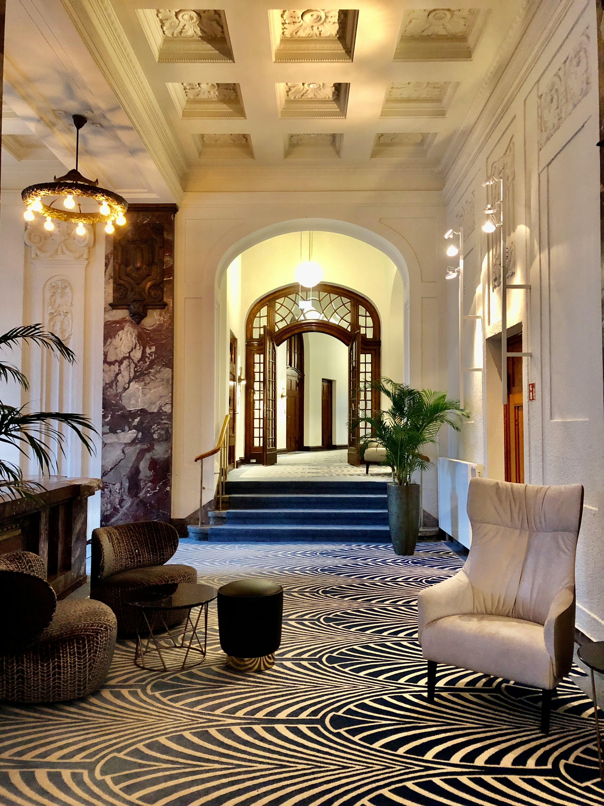

Gkz Oteli
Hoşgeldiniz otelimizin dışından başlayarak her şey anlatılmıştır otelimizle alakalı
"Modern tasarımıyla dikkat çeken otelimiz, geniş ve davetkâr bir giriş alanı sunar. Cam ve metal kaplamalarla özenle tasarlanmış dış cephesi, şık bir görünüm sağlar. Otelimizin ana girişinde, büyük ve aydınlatılmış bir isim tabelası yer alırken, geniş pencereler ve balkonlar konuklara ferah bir atmosfer sunar. Ayrıca, özenle düzenlenmiş bahçeler ve yürüyüş yolları, misafirlerimize rahat bir dış mekan deneyimi yaşatır. Gece saatlerinde, dış aydınlatma otelimizin zarif mimarisini vurgular ve güvenliği artırır. Girişte yer alan güvenlik kameraları ve otopark alanı, misafirlerimizin güvenliğini ve konforunu ön planda tutar."
Otelin Odalarından Biri
"Konuklarımız için tasarlanmış olan odamız, rahat bir konaklama deneyimi sunmak üzere özenle döşenmiştir. Geniş ve konforlu yatak, kaliteli nevresimlerle donatılmış olup, yatak başlıklarının yanında pratik yan masalar bulunmaktadır. Odamızda, oturma alanında rahat koltuklar ve küçük bir masa, dinlenme veya sohbetleriniz için ideal bir alan sunar. Ayrıca, iş amaçlı konaklayan misafirlerimiz için bir çalışma masası ve ergonomik bir sandalye mevcuttur. Televizyon, kablo yayınları ile birlikte sunulurken, ücretsiz Wi-Fi erişimi ile internet bağlantınız her zaman hazırdır. Odanın içinde bir güvenlik kasası, minibar ve çay-kahve yapma olanakları da bulunur. Özel banyomuzda, duş veya banyo küveti, temiz havlular ve lüks banyo ürünleri yer alır. Modern dekorasyon, konforlu bir atmosfer yaratırken, klima ve ısıtma sistemi ile oda sıcaklığınız her zaman ideal seviyede tutulur."
Otelin Girişi
"Otelimizin geniş ve davetkâr girişi, misafirlerimize rahat ve hoş bir karşılama sunar. Geniş ana kapımız, modern ve şık bir tasarımla tasarlanmıştır ve üst kısmında otelimizin adı aydınlatılmış bir şekilde yer alır. Gece saatlerinde, özel aydınlatma sistemlerimiz, giriş alanını hem estetik hem de güvenlik açısından öne çıkarır. Resepsiyon masamız, profesyonel personelimiz tarafından her zaman hizmetinizdedir ve bekleme alanında konforlu oturma düzenlemeleri bulunur. Giriş alanımızda, güvenlik kameraları ve kontrol sistemleri ile misafirlerimizin güvenliğini ön planda tutuyoruz. Ayrıca, giriş kısmında bulunan tentelik, hava koşullarına karşı koruma sağlar ve hoş bir ilk izlenim yaratır. Özenle dekore edilmiş bu alan, otelimizin kaliteli hizmet anlayışını ve misafirperverliğini yansıtır."
Vıp Odalar

"VIP odamız, konfor ve lüksün en yüksek seviyede sunulduğu özel bir alan olarak tasarlanmıştır. Geniş ve konforlu yatağımız, kaliteli nevresimlerle donatılmış olup, şık bir yatak başlığı ile tamamlanmıştır. Odamızda geniş bir oturma alanı, rahat koltuklar ve şık bir masa yer alır. Çalışma masamız, yüksek hızlı internet ve modern medya akış seçenekleri ile donatılmıştır. Mini barımız zengin içecek ve atıştırmalıklarla doludur ve çay/kahve yapma olanakları konforunuzu artırır. Özel banyomuz, geniş bir duş alanı veya jakuzi küveti ile birlikte lüks banyo ürünleri sunar. Odamızda ayrıca güvenli bir kasa, klima ve ısıtma sistemleri ile kişisel konforunuzu sağlarız. Zarif dekorasyonumuz, modern sanat eserleri ve kaliteli mobilyalar ile tamamlanmış olup, özel aydınlatma sistemimizle atmosferi dilediğiniz gibi ayarlayabilirsiniz. Ayrıca, VIP konuklarımıza özel hizmetler ve hoş geldiniz ikramları sunarak unutulmaz bir deneyim yaşatıyoruz."
| Normal Oda | Vıp Oda | Parası | Parası(VIP) |
|---|---|---|---|
| kapıya hizmet × | kapıya hizmet ✓ | hizmete dahil | hizmete dahil |
| Açık Büfe✓ | Açık Büfe✓ | Hizmete Dahil | Hizmete Dahil |
| Özel Kasa× | Özel Kasa✓ | Hizmete Dahil Değil | Hizmete Dahil |
| Normal Oda | Vıp Oda | 6000 | 10000 |
Kullanıcı Yorumları
vıp odaları çok pahalı ama genel olarak iyi ayrıca bu sitede niye adam akıllı avatar resmi yok
Sitede çok az css kullanılmış memnun kalmadım ayrıca sitenin kaynak kodunu incelediğim zaman css için ayrı bir dosya açılmadığınıda görüyorum aşırı derecede bir düzensizlik var